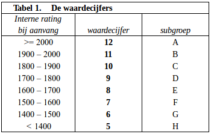
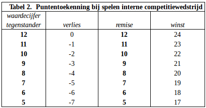

ALKMAARSE SCHAAKVERENIGING ‘DE WAAGTOREN’
- REGLEMENT INTERNE COMPETITIE -
Peter van Diepen, intern wedstrijdleider
telefoon: 06-24168122 e-mail: intern@waagtoren.nl aanmelden / afzeggen:
0-0-0.nl
1.
De interne competitie wordt gespeeld in één groep. Degene die het hoogst eindigt, is de clubkampioen en krijgt een wisselbeker. Wanneer spelers gelijk eindigen als hoogste beslist het aantal winstpartijen in de interne competitie en als dat ook gelijk is, beslist het aantal winstpartijen in de externe competitie.
2.
Je kunt alleen clubkampioen worden en prijzen winnen als je minstens 20 keer hebt gespeeld, waarbij oneven of reglementair gewonnen en op dinsdag gespeelde bondswedstrijden als zodanig meetellen.
3.
Het schaakseizoen begint na de zomervakantie en gaat door tot in juni. Spelers kunnen elkaar per seizoen meer dan 1 keer ontmoeten. Tussen twee partijen met dezelfde spelers moeten minstens 7 partijen liggen. Bij elke volgende partij met dezelfde spelers wisselen de spelers van kleur.
4.
Je kunt per ronde afzeggen door dat te noteren op een speciale absentielijst die in de speelzaal aanwezig is of met een e-mail naar afzeggen@waagtoren.nl. Een afzegging per e-mail is pas geldig als deze door de wedstrijdleider is bevestigd. Het is ook mogelijk om gebruik te maken van een aanmeldregeling. Dat betekent dat je je per ronde moet aanmelden via aanmelden@waagtoren.nl.
Je kunt ook je aanmeldingen / afzeggingen voor alle ronden bijhouden op 0-0-0.nl
5.
Op de eerste speelavond worden de aanwezigen volgens rating ingedeeld in 3 groepen, waarbij binnen elke groep van n spelers nummer 1 speelt tegen nummer ½n+1, nummer 2 tegen nummer ½n+2, enz.
Vanaf ronde 2 wordt ingedeeld op basis van de ranglijst, dus 1-2, 3-4, enz.
De wedstrijdleider kan een speler die laag staat, omdat hij weinig gespeeld heeft, handmatig indelen tegen een gelijkwaardige tegenstander. Daarbij houdt hij zoveel mogelijk rekening dat die indeling de strijd om het kampioenschap niet beïnvloedt.
6.
Indien er bij de indeling een oneven aantal spelers is, kan één persoon niet spelen. Dat is de laagste speler van de ranglijst met het grootste aantal gespeelde partijen, die niet eerder in het seizoen al oneven was en die niet bij de eerste 8 aanwezige spelers van de ranglijst staat.
7.
De partijen beginnen om 20.00 uur. Indien een tegenstander nog niet is verschenen, dient de aanwezige speler de klok in werking te stellen. Is die tegenstander om 21.00 uur nog niet aanwezig, dan wordt de partij voor de aanwezige speler als reglementair gewonnen verklaard.
8.
Het speeltempo bedraagt 1 uur 40 minuten p.p.p.p. en 10 seconden extra per zet. Elke speler is verplicht de gespeelde zetten te noteren, tenzij hij minder dan 5 minuten denktijd over heeft.
Jeugdspelers van onder de 18 jaar (en leden die deze jeugdspelers vervoeren) hebben het recht met hun tegenstander van die avond een partij te spelen van 50 minuten p.p.p.p. en 10 seconden extra per zet. In overleg kan echter ook besloten worden het gewone speeltempo aan te houden.
9.
Er wordt gespeeld volgens de FIDE-Regels voor het Schaakspel, volgens de Officiële Nederlandse vertaling van de KNSB januari 2018. Bij een onregelmatigheid tijdens de partij dient degene, die de onregelmatigheid constateert, de klokken stil te zetten, waarna men in eerste instantie onderling tot een oplossing probeert te komen in overeenstemming met de FIDE-regels. Bij blijvende onenigheid dient de wedstrijdleider te worden geraadpleegd.
10.
Voor elk seizoen krijgt iedere speler de KNSB-rating van 1 augustus. Als er geen KNSB-rating is, of in andere bijzondere gevallen, bepaalt de wedstrijdleider in overleg met de speler zijn startrating.
Op basis van de startrating wordt de speler bij een subgroep met een waardecijfer ingedeeld. Het waardecijfer van een speler is gelijk aan de eerste twee cijfers van zijn rating (de linkerhelft) minus 8, met dien verstande dat het hoogste waardecijfer 12 bedraagt en het laagste 5. Zie tabel 1.
De waardecijfers blijven het gehele speelseizoen hetzelfde.

11.
Iedere speler begint met 300 startpunten.
12.
De puntentoekenning bij de interne partijen is als volgt. Als je remise speelt, krijg je het waardecijfer van je tegenstander. Als je wint, krijg je het waardecijfer van je tegenstander plus 12 punten. Als je verliest, krijg je het waardecijfer van je tegenstander min 12 punten. Zie tabel 2.

Dan zijn er nog vergoedingen voor niet intern spelen.
Voor een externe wedstrijd op dinsdag krijg je je eigen waardecijfer plus 4 punten. Voor een externe wedstrijd op een andere dag dan dinsdag krijg je 4 punten.
Als je afzegt, krijg je je eigen waardecijfer min 4 punten.
Als je niet speelt, omdat je oneven bent of omdat je tegenstander niet komt opdagen, krijg je je eigen waardecijfer plus 12 punten (reglementaire winst).
Als je niet hebt afgezegd en je niet komt opdagen op dinsdag, krijg je je eigen waardecijfer min 12 punten (reglementair verlies).
Als je niet speelt, omdat je bent vrijgesteld zodat je teamleider of wedstrijdleider kunt zijn op dinsdag, krijg je je eigen waardecijfer (reglementaire remise).
13.
In alle gevallen waarin dit reglement niet voorziet, beslist het bestuur.